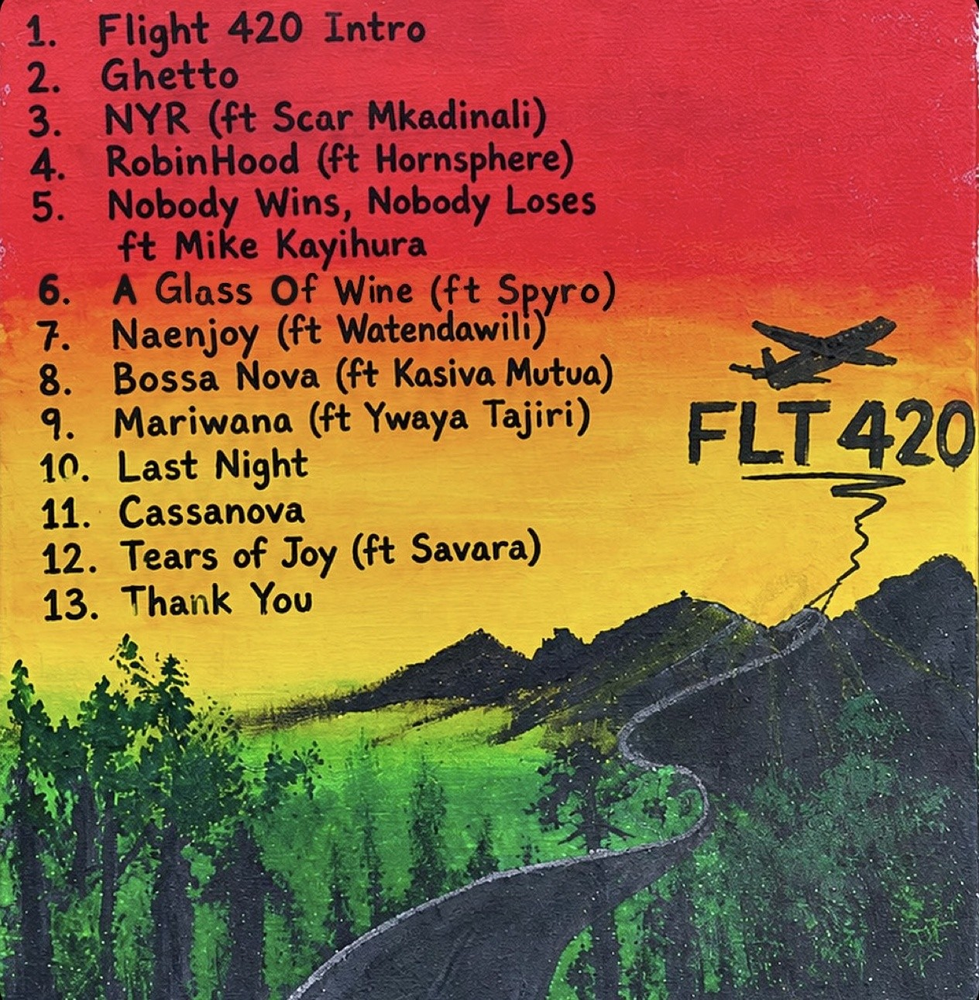

Bensoul's Flight 420: a grown-up record that takes its time
Thirteen tracks, a deep guest list and three colours that carry the whole idea. Bensoul says this one wasn't made to trend. We think that's exactly why it works.
Bensoul released Flight 420 on Friday 30 October, on his own imprint, Sudah Nation. It's 13 tracks long, and it arrives three and a half years after The Lion of Sudah, the debut album he put out on Sauti Sol's Sol Generation label in April 2023. This time the label is his own, and you can hear him enjoying the freedom.
The setupThree colours, one idea
The songs started at a writing camp in February, with Hendrick Sam, Wuodomollo and Jaz Beatz on production, and Trevor Magak recording the live instruments. Bensoul has described the album as being about life, joy and passion, and the rollout spelled that out in colour. On Instagram in April he gave each one a meaning: red for passion, yellow for happiness, green for life. Those are the colours of the painted plane on the cover, the knitted cap and the suits in his photos, and the sunset on the hand-painted back cover.
The number has followed him for a while. The Lion of Sudah came out on 20 April 2023, the lead single NaEnjoy came out on 20 April 2026, and he announced it with a post that read simply “4:20pm TODAY.” He hasn't explained the title on record, so we'll leave that to him.
I can't be put in a box.
Bensoul, to KBC, on the release of Flight 420
What worksLive hands, real horns
This is a played record rather than a laptop one, and that's its biggest strength. Hornsphere, the horn section, gets its own feature on RobinHood, and the reggae lean of the production sits easily on top of the Afrosoul Bensoul is known for. Nothing is rushed, and the arrangements leave room for the voice.
The guest list is deep without crowding him out. Scar Mkadinali turns up on NYR, Mike Kayihura on Nobody Wins, Nobody Loses, Spyro on A Glass of Wine, Watendawili on NaEnjoy, Ywaya Tajiri on Mariwana and Savara, Sauti Sol's own, on Tears of Joy. Each one feels like a conversation rather than a box ticked for the algorithm. NYR is the one that jumps out first.

What doesn'tA long runway
The rollout took most of the year. NaEnjoy and Last Night came out together in April, six months before the album, and Mariwana followed in early October. NYR was also released as a single. That kept fans fed, and it built real momentum, but it also means a good part of the album was already familiar by release day. If you've been following him, the full record has fewer surprises than it could have.
It's also a steady album rather than a peaky one. The mood holds from the intro to the closing Thank You, which is great for a front-to-back listen and less so if you're looking for the one song to send to the group chat.
The early readTwo songs out front
There are no critic scores to quote yet. So far the coverage has been launch features rather than reviews, so for now the listeners are doing the reviewing. As of 4 November, NaEnjoy with Watendawili is still Bensoul's top song on Apple Music in Kenya, six months after it came out, with NYR right behind it. Album tracks Ghetto, Mariwana and A Glass of Wine have already climbed into his top songs too.
Our verdictPress play
Flight 420 isn't a hit parade, and it isn't trying to be. It plays like an artist who has settled into himself: a record about life, joy and passion that actually sounds like those things. The rollout ran long, but the album holds together from start to finish. Put it on for a long drive or a slow Sunday, and let it play all the way through.
Sources
- KBC: “I can't be put in a box,” says Bensoul as he releases Flight 420
- allAfrica: Bensoul on Flight 420
- Capital FM: Bensoul embraces life, joy and creative freedom on Flight 420
- Apple Music: Flight 420
- Apple Music: Bensoul (Kenya)
- Apple Music: NaEnjoy, single
- Shazam: NYR credits
- Shazam: NaEnjoy
- Citimuzik: A Glass of Wine ft. Spyro
- allAfrica: Bensoul and Ywaya Tajiri join forces on Mariwana
- Pedeshee TV: Bensoul and Watendawili, NaEnjoy (20 April 2026)
- Citimuzik: Nobody Wins, Nobody Loses ft. Mike Kayihura
- Afrocritik: Bensoul lights up his own lane with The Lion of Sudah
- Wakilisha: The Lion of Sudah
- Bensoul on Instagram (@bensoulmusic): official tracklist and April 2026 posts